Fit a Sigmoidal Model.
Examples
# Set up a data frame of time and completion percentage data
data <- data.frame(time = 1:10, completion = c(5, 15, 40, 60, 70, 75, 80, 85, 90, 95))
# Fit a logistic model to the data.
fit <- fit_sigmoidal(data, "time", "completion", "logistic")
# Use the model to predict future completion times.
predictions <- predict_sigmoidal(fit, seq(min(data$time), max(data$time),
length.out = 100), "logistic")
# Plot the results.
p <- ggplot2::ggplot(data, ggplot2::aes_string(x = "time", y = "completion")) +
ggplot2::geom_point() +
ggplot2::geom_line(data = predictions, ggplot2::aes(x = x, y = pred), color = "red") +
ggplot2::labs(title = "Fitted Logistic Model", x = "time", y = "completion %") +
ggplot2::theme_minimal()
#> Warning: `aes_string()` was deprecated in ggplot2 3.0.0.
#> ℹ Please use tidy evaluation idioms with `aes()`.
#> ℹ See also `vignette("ggplot2-in-packages")` for more information.
p
